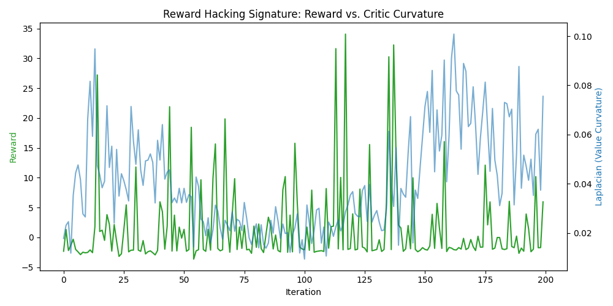
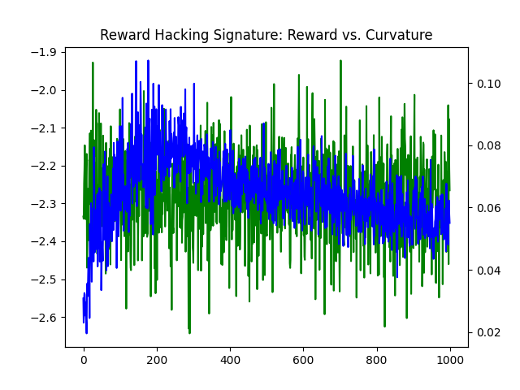

Modeling reinforcement learning trajectories as stochastic differential equations
We model the trajectory of an RL agent through state space as a stochastic differential equation. The diffusion term in the Hamilton-Jacobi-Bellman equation turns out to be an effective detector of reward hacking, and adding the Laplacian of the value function to the training loss offsets it.
Project overview
In reinforcement learning, agent trajectories contain both deterministic and stochastic components. The agent uses the value function to navigate the environment (signal), while the environment and policy introduce non-deterministic elements (noise). By modeling this as an SDE, we gain deeper insight into agent behavior and can detect problematic patterns like reward hacking.
Key insight. Reward hacking occurs when an agent exploits unsustainable loopholes in the environment. These exploits are characterized by high diffusion terms: the agent spends most of its effort fighting environmental stochasticity to maintain its position, rather than improving the value function.
1. Modeling the agent's trajectory
The state SDE
We model the agent's trajectory through state space as a stochastic differential equation:
$$dX_t = f(X_t, u_t)\,dt + \sigma(X_t, u_t)\,dW_t$$
- $X_t$: the state at time $t$
- $u_t$: the action taken at time $t$
- $f(X_t, u_t)$: the drift term, the deterministic dynamics given state and action
- $\sigma(X_t, u_t)$: the diffusion term, capturing environmental stochasticity
- $dW_t$: a Wiener process (Brownian motion) representing random fluctuations
The value function
At time $t$, the agent aims to maximize the present value of rewards from time $t$ to the horizon $H = \infty$:
$$V(x, t) = \max_u \mathbb{E}\left[\int_t^\infty e^{-\rho(s-t)} r(X_s, u_s)\, ds \,\Big|\, X_t = x\right]$$
- $\rho$: the discount rate, which sets how quickly future rewards decay
- $e^{-\rho(s-t)}$: the discount factor for the present value of future rewards
- $r(X_s, u_s)$: the reward function for state-action pairs
Interpretation. The value of being in a state is the present value of the total reward accumulated if the agent takes optimal actions for the rest of time.
2. Deriving the Hamilton-Jacobi-Bellman equation
Step 1. Taylor expansion
We begin with a Taylor expansion of the value function with respect to time:
$$V(x, t) \approx \max_u \left\{r(x, u)\Delta t + e^{-\rho\Delta t}\,\mathbb{E}[V(X_{t+\Delta t}, t + \Delta t)]\right\}$$
The value of the current state equals the immediate reward over a small time interval plus the discounted expected value of the next state.
Step 2. Applying Itô's lemma
Itô's lemma gives the differential of the value function:
$$dV = \left(\frac{\partial V}{\partial t} + f\frac{\partial V}{\partial x} + \frac{1}{2}\sigma^2 \frac{\partial^2 V}{\partial x^2}\right)dt + \sigma\frac{\partial V}{\partial x}\,dW$$
When taking expectations, the stochastic term ($dW$) vanishes, leaving only the deterministic drift.
Step 3. Substitution and simplification
Plugging the Itô expansion into the Taylor approximation and using $e^{-\rho\Delta t} \approx 1 - \rho\Delta t$ for small $\Delta t$:
$$V(x, t) \approx \max_u\left[r(x, u)\Delta t + (1 - \rho\Delta t)\left(V(x, t) + \left(\frac{\partial V}{\partial t} + f\frac{\partial V}{\partial x} + \frac{1}{2}\sigma^2 \frac{\partial^2 V}{\partial x^2}\right)\Delta t\right)\right]$$
Canceling $V(x, t)$ from both sides and dividing by $\Delta t$:
$$0 = \max_u\left[r(x, u) - \rho V(x) + f(x, u)\frac{\partial V}{\partial x} + \frac{1}{2}\sigma^2 \frac{\partial^2 V}{\partial x^2}\right]$$
Step 4. The HJB equation
Rearranging, we obtain the Hamilton-Jacobi-Bellman equation:
$$\rho V(x) = \max_u\left[r(x, u) + \underbrace{f(x, u)\frac{\partial V}{\partial x}}_{\text{drift}} + \underbrace{\frac{1}{2}\sigma^2 \frac{\partial^2 V}{\partial x^2}}_{\text{diffusion}}\right]$$
This decomposes the value into the immediate reward $r(x, u)$, the drift contribution (how the deterministic dynamics affect value), and the diffusion contribution (how stochasticity affects value).
3. Interpreting the time derivative
The left-hand side of the HJB equation has an important interpretation. Consider that the discounted value is
$$V(x, t) = e^{-\rho t}\tilde{V}(x, t)$$
Taking the time derivative:
$$\frac{\partial V}{\partial t} = -\rho e^{-\rho t}\tilde{V}(x, t) = -\rho V$$
Therefore:
$$\rho V(x, t) = -\frac{\partial V}{\partial t}$$
Interpretation. As time passes, the agent's opportunity to increase value and reach the goal decreases. The agent should want to reach its objective as quickly as possible, since delay reduces the present value of future rewards.
4. Detecting reward hacking via the diffusion term
We focus on the diffusion term as a signal for detecting reward hacking:
$$\text{Diffusion term} = \frac{1}{2}\sigma^2 \frac{\partial^2 V}{\partial x^2}$$
What is reward hacking?
In RL environments, reward hacking occurs when an agent finds loopholes that yield high rewards but are unsustainable. These exploits are characterized by:
- Little real signal in terms of improving the value function
- The agent spending most of its effort offsetting random environmental fluctuations
- High sensitivity to stochastic perturbations (a large diffusion term)
- Rewards that depend on maintaining a precarious position rather than a robust policy
The Laplacian as a detector
The second derivative $\frac{\partial^2 V}{\partial x^2}$ (the Laplacian in higher dimensions) measures the curvature of the value function. High curvature indicates that the value function is highly sensitive to small perturbations in state, that the agent must work hard to maintain its position against noise, and that the reward is not robust to environmental stochasticity.
Key insight. If the Laplacian is large, the agent is likely exploiting a fragile reward structure rather than learning a valuable policy. The diffusion term quantifies this fragility.
5. Contributions
This work makes three contributions to understanding and mitigating reward hacking in RL.
Laplacian-based detection
The Laplacian of the value function with respect to the state is an effective detector of reward hacking. By computing $\nabla^2 V$ during training or evaluation, we can identify when an agent is exploiting fragile reward structures. High Laplacian values indicate the agent is fighting environmental noise rather than learning robust policies.
Regularization via the Laplacian
We can offset the effects of reward hacking by adding a weighted Laplacian term to the training loss. A penalty proportional to $\|\nabla^2 V\|^2$ encourages the learned value function to be smoother and more robust to stochastic perturbations, guiding the agent away from fragile exploits. The regularized training loss becomes
$$\mathcal{L} = \mathcal{L}_{\text{original}} + \lambda \|\nabla^2 V\|^2$$
where $\lambda$ controls the strength of the regularization. This penalizes high curvature in the value function and encourages more stable, sustainable reward strategies.
Theoretical framework
Connecting SDE theory and RL provides new theoretical insight. By modeling RL trajectories as SDEs and deriving the HJB equation, we establish a rigorous framework for understanding the interplay between deterministic policy improvement (drift) and robustness to uncertainty (diffusion).
Mathematical summary
State SDE
$$dX_t = f(X_t, u_t)\,dt + \sigma(X_t, u_t)\,dW_t$$
Value function
$$V(x, t) = \max_u \mathbb{E}\left[\int_t^\infty e^{-\rho(s-t)} r(X_s, u_s)\, ds \,\Big|\, X_t = x\right]$$
Hamilton-Jacobi-Bellman equation
$$\rho V(x) = \max_u\left[r(x, u) + f(x, u)\frac{\partial V}{\partial x} + \frac{1}{2}\sigma^2 \frac{\partial^2 V}{\partial x^2}\right]$$
Regularized training loss
$$\mathcal{L} = \mathcal{L}_{\text{RL}} + \lambda \|\nabla^2 V\|^2$$
Media and demonstrations
Reward hacking detection signatures
Visualization of the Laplacian signatures that indicate reward hacking in RL agents.


Agent behavior: reward hacking episodes
Videos of agents exhibiting reward hacking behavior across multiple episodes. Notice the characteristic pattern of exploiting environmental loopholes rather than learning robust policies.
Observation. In these episodes, the agent spends significant effort maintaining its position against stochastic perturbations rather than improving the value function. This is the hallmark of reward hacking, and the Laplacian detector identifies these fragile exploitation patterns.
Conclusion
By modeling reinforcement learning trajectories as stochastic differential equations, we gain powerful tools for understanding and mitigating reward hacking. The diffusion term in the HJB equation, specifically the Laplacian of the value function, serves as an effective detector of fragile reward exploits. Incorporating this insight into training through Laplacian regularization helps agents learn more robust, sustainable policies.
This work bridges theoretical insights from stochastic calculus with practical RL challenges, opening new avenues for creating more reliable and trustworthy learning systems.
Future work. Extension to multi-dimensional state spaces, empirical validation across diverse RL environments, and adaptive regularization schemes that adjust $\lambda$ during training.